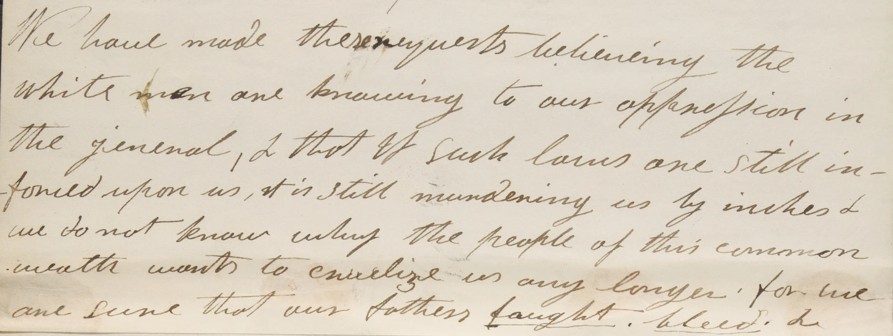

All 308 dated actions extracted from the dissertation, organized by the book's own four spaces of protest (plus intro and conclusion), filterable by cross-cutting theme and by era, and connected through the 48 recurring named figures who tie the timeline together. Click a figure to trace every appearance and see who else they show up alongside.
Drag across the strip to zoom into a period, drag the shaded window to move it, or click outside it to zoom back out. Busy decades get more room than quiet ones; hatched areas are long stretches with no events.
Selected Event
Click any dot for full details.
Where It Happened
Marker size shows how many events trace to each place, and color shows the most common chapter among them. Click a marker or a place in the list to read its events. Locations are matched automatically from place names in each event's own text, so a few are approximate, statewide/federal rather than a single point, or missing when no place is named.
Chapter Synthesis
The argument of each part of the dissertation at a glance. Pink names are recurring figures (click to trace them on the timeline); bold places open on the map.
Key Figures
48 recurring people tie this timeline together. Click one to trace their thread.
The 1834 Mashpee Petition and Its Signers